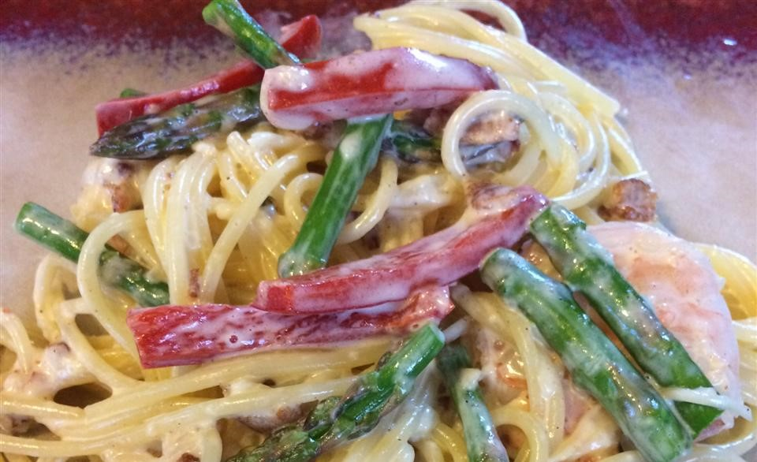

Fettuccine Carbonara

Description
An Italian main course consisting of fettuccine with bacon and a creamy sauce made from eggs, Pecorino cheese and black pepper.
Ingredients
- 1 pound dry fettuccine noodles
- 8 slices of bacon
- 4 eggs
- 1/2 cup grated Pecorino cheese
- 1/4 cups heavy cream
- 1 pinch ground black pepper to taste
Steps
- Bring a large pot of lightly salted water to a boil. Add fettuccine and cook for 8 to 10 minutes or until al dente; drain.
- Fry bacon in skillet over medium heat until crispy, remove and drain on paper towel. Chop with knife into bits.
- Beat the eggs, cheese and cream in a bowl, then add the bacon. Pour over the pasta in the pan and toss gently using tongs.
- Return the pan to a very low heat and cook for 1 to 2 minutes, or until slightly thickened. Don't overheat or the eggs will scramble. Season well with black pepper and serve.
Back to menu